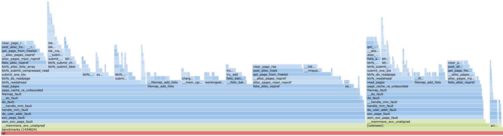

From trees to graphs: speeding up vector search 10x with Hannoy
This article aims to address several limitations of the current vector database used by Meilisearch, and to introduce hannoy: a graph-based alternative to arroy using LMDB, which is already part of Meilisearch since v1.21 (Sept 15) as experimental and the default one since v1.29 (Dec 8).
Early testing has shown that the new system can reduce indexing times from 2 days to 2 hours, decrease the on-disk index size by a factor of 2, and speed up search by ~10 times. When it was first put into production on an instance with indexing difficulties, it reduced the indexing latency from 2 months to... 6 seconds.
To illustrate why this is the case, I'll run through some key heuristics of graph ANN algorithms and share a few snippets from the code that are particularly illustrative. Finally, we'll share some benchmarks comparing the new solution to what's currently in Meilisearch today.
Note
I am not a Meilisearch employee or affiliated with the company in any way other than being a co-author on their new vector database.
Open Source First Steps (skippable cutscene)
I first became aware of Meilisearch back in March, when my company began considering their enterprise solution for hosting and indexing our collection of ~10 million documents. As any sane person would do, I stalked their GitHub and was overwhelmed by the sheer volume of in-house crates they maintained and used in their search engine. Amongst them was arroy: a k-d trees inspired vector database, based initially on Spotify's similarly named project: annoy.
Wasting no time, I made my first open source contribution ever to the repo and... welp, it's still not merged 😔. But hey, as the French say: that's life.
Fortunately, I was still able to merge a few other PR's in the meantime and learn more about how the algorithm worked. The back and forth I had with other devs throughout the process (notably with @irevoire) was instructive and overall made it a pretty enjoyable experience.
After a couple of months of working on arroy, I naturally became aware of a few unsavoury trade-offs that lurked beneath the surface, and which ultimately motivated me to pursue a new approach.
Limitations of the Current System
Arroy is a k-d tree-based ANN algorithm, meaning that during indexing, you construct an ensemble of random partitions of your vector space, and at runtime, you search through them all simultaneously. To be more precise, it's random-projection-based.
Visually, that process looks like the pic below:

A widespread criticism of this type of approach is that search performance and latency degrade when the dimension of the embeddings exceeds about 20. Let's try to understand why.
Looking at the code, we see that leaf nodes store as many vectors as the embedding dimension. This is a good and bad thing. In the extreme case where "one leaf equals one vector", e.g., you have a binary tree, each tree has height log2(n). By grouping d-many vectors in a leaf, trees can be built much faster since they only have height log2(n/d). For 1 million vectors of dimension 768, the numbers work out to building trees with heights of 10 versus 20; that's a 2.6 MiB versus 1.9 GiB in storage overhead for a single tree. This makes arroy B-tree-like, which is cool.
Where this is problematic, however, is at search time since you need to compare the query to each vector in a leaf. Even if you're only trying to retrieve the 10 nearest-neighbours, you still need to do 768 distance calculations 😔. That adds significant latency during retrieval.
Unfortunately, there's no "nice" compromise; if you make leaves more granular, you need to store more nodes in the tree, which increases the index size in memory and exponentially increases build times, as we've seen.
Tip
When using binary vectors and a bit-sampling hash, the memory overhead is just a single usize per node indicating the position of the random bit. This is the only case where we can afford to generate deeper trees, as storing a node on disk incurs next to no cost.
Another big problem with arroy is that the indexing algorithm is extremely read-heavy. That makes sense given that to create a hyperplane, you need to randomly sample points from the current node to generate clusters. The impact of this is so high that in some builds, over 90% of the time is spent doing IO and in page faults - a problem that only grows exponentially with dataset size. This phenomenon is still unresolved, as documented in arroy#145.
Operational concerns aside, it's also just difficult to maintain arroy. There's a lot of mental gymnastics involved in understanding the recursive tree balancing algorithms, the creation and merging of temp files during partial builds, and the heuristics for auto-selecting build parameters. But hey, maybe that's a skill issue on my part.
Graph ANNs to the Rescue?
Current state-of-the-art ANN libraries employ graph-based approaches to achieve the optimal trade-off between search time and recall performance. Here, a navigable graph is built over all points in the database, and search is performed using a best-first traversal in log time. So rather than imposing structure on the dataset via separating hyperplanes like in arroy, techniques like HNSW and DiskANN focus more on building up pathways between points in local neighbourhoods.
If you haven't already read it, I'd recommend Pinecone's fantastic blog post on Faiss and the hnsw to get a working mental model of how these algorithms work. For the academically inclined, the original paper is also quite insightful.
For the search to converge quickly to the (approximate) nearest neighbour, the graph needs to satisfy what's known as the sparse neighbourhood graph (SNG) property. Put simply, points in a local neighbourhood of x should be closer to x than they are to each other. For the mathematically inclined, this property reduces to the relations below :

See, it's easy!
This equation is the "secret sauce," if you will, of graph ANNs. Both the HNSW, DiskANN, and hannoy! rely on this to ensure efficient search.

Vector search over a graph has several advantages over space-partitioning approaches. First of all, it's extremely cheap to store node edges on disk at around ~200 bytes per vector even without using compressed bitmaps (which we do). For another, disk reads and distance computations at search time are significantly reduced as neighbours are explored one at a time instead of in large chunks. Insertions and deletions are also much simpler using a graph, as we only need to update the incoming/outgoing links from the modified nodes. In contrast, in arroy these operations potentially trigger tree re-balancing right up to the root.
Despite these drawbacks, arroy is still great in the sense that it's disk-based, being built on top of LMDB. This means that you can build and search through indexes that are much larger than your machine's RAM using mmap. For reference, many popular HNSW implementations operate entirely in RAM, which is fast but requires multiple nodes and partitioning if the dataset becomes too large. So arroy was pretty avant-garde in that respect.
Hannoy
Hannoy is a graph-based successor to arroy with KV-backed storage via LMDB.
The goal of hannoy is to combine the best of both worlds from arroy and graph ANNs into a production-ready vector database that maintains and improves upon key metrics vs the legacy system. What's also neat is that it makes heavy use of crates maintained by the Meilisearch devs, such as heed, roaring-rs, and steppe.
Its implementation is inspired by a few projects, notably Faiss' HNSW and the hnsw crate, but with significantly more support for zero-copy semantics, persistence, SIMD, and online updates & multi-phase indexing. There are also several novel techniques inspired by research papers to handle tasks such as graph merges and layer exploration.
The most interesting engineering challenge of the project was determining how to handle incremental insertions and deletions to the graph over its lifetime. After all, we expect users' databases to grow over time, and not all their data is available immediately. The industry standard for graph algorithms had been to periodically rebuild the index either on a cron-like schedule or after sufficient updates had accumulated. The FreshDiskANN paper summarizes this issue with this type of approach succinctly:
It would take about 1.5-2 hours on a dedicated high-end 48-core machine to build a good-quality HNSW index over 100M points. So we would need three dedicated machines for constantly rebuilding indices to maintain even six-hourly freshness guarantee over a billion point index. [1]
Yeah, so that's not great :/
Luckily for us, Microsoft has already solved this problem. The idea essentially boils down to avoiding eager updates to the graph by orchestrating a streaming delete/insert/merge operation once the size of a particular in-memory temporary index reaches a critical size. While this is certainly a proven strategy, with hannoy we aimed to implement something a bit less complicated, but which still makes liberal use of techniques from DiskANN (even though technically hannoy is an HNSW).
Ok, so how do we do it?
When items are added or deleted from the graph, a special Updated key is written to the database pointing to the modified node. Before building the index, we generate a bitset of items that are (i) new, (ii) modified, or (iii) removed & pass those to the HnswBuilder. The deletion bitset plays a special role at the end of the build where instead of just removing any edge
The code below shows how we accomplish this in hannoy:
fn maybe_patch_old_links(
&mut self,
lmdb: &FrozenReader<D>,
to_delete: &RoaringBitmap,
options: &BuildOption,
) -> Result<()>
{
// recover list of graph edges in the on-disk index
let links_in_db: Vec<_> = todo!();
links_in_db.into_par_iter().try_for_each(|result| {
let ((id, lvl), links) = result?;
// don't need to patch links of deleted items
if to_delete.contains(id) {
return Ok(());
}
let del_subset = &links & to_delete;
// Get links for item `id` from current build in level `lvl`
let mut new_links = self.layers[lvl].get(&id).map(|s| s.links).unwrap_or_default();
// No work to be done, continue
if del_subset.is_empty() && new_links.is_empty() {
return Ok(());
}
// DiskANN-style deletion policy
let mut bitmap = RoaringBitmap::new();
for item_id in del_subset.iter() {
bitmap.extend(lmdb.get_links(item_id, lvl)?.iter());
}
bitmap |= links;
bitmap -= to_delete;
for other in bitmap {
let dist = D::distance(&lmdb.get_item(id)?, &lmdb.get_item(other)?);
new_links.push((OrderedFloat(dist), other));
}
let pruned = self.robust_prune(new_links, lvl, lmdb)?; // prunes `new_links` down to a manageable size
self.layers[lvl].insert(id, NodeState { links: ArrayVec::from_iter(pruned) });
Ok(())
})?;
Ok(())
}Another interesting feature of hannoy is how the new graph (in RAM) is merged with the old one (from disk, in LMDB). For each batch of points to be inserted, we build a brand new HNSW in RAM. To ensure that this new graph connects to the old one, we reschedule the entry points of the old graph for re-indexing in the new one. Every time we need to access an item's links, we look in both memory and LMDB. This way, we can establish connections with the larger disk-based index in a lazy manner. This is essential, as otherwise, any new vectors inserted into the database after the initial build would be unreachable; you'd only be able to search in disjoint graphs, and recall would suffer.
/// Returns only the Id's of our neighbours. Always check lmdb first.
#[instrument(level = "trace", skip(self, lmdb))]
fn get_neighbours(
&self,
lmdb: &FrozenReader<'_, D>,
item_id: ItemId,
level: usize,
build_stats: &BuildStats<D>,
) -> Result<Vec<ItemId>> {
let mut res = Vec::new();
// O(1) from frozzenreader
if let Ok(Links { links }) = lmdb.get_links(item_id, level) {
build_stats.incr_lmdb_hits();
res.extend(links.iter());
}
// O(1) from self.layers
let Some(map) = self.layers.get(level) else { return Ok(res) };
match map.pin().get(&item_id) {
Some(node_state) => res.extend(node_state.links.iter().map(|(_, i)| *i)),
None => {
// lazily add this entry
self.add_in_layers_below(item_id, level);
}
}
Ok(res)
}This strategy actually works well in practice ! By re-indexing <<1% of the vectors in the original graph, we're able to merge on-disk and in-memory indexes seamlessly. To the best of my knowledge, this is a novel technique that no other HNSW implementations utilize for handling incremental builds, and it is essential to the use case at Meilisearch, where batch insertions are heavily used.
There are tons of other cool sub-problems like those that we address in hannoy, but I'll save those for another post. The important part to retain here is that hannoy is "a DiskANN-inspired HNSW implementation with LMDB-backed storage".
Benchmarking Hannoy vs Arroy
I like making unsubstantiated claims about the performance of my system as much as the next guy, but there comes a point when it's time to share some hard numbers. That time is now!
To facilitate comparison between the old system and the new one, we'll utilize the trusty vector-store-relevancy-benchmark from Meilisearch, as featured in previous blog posts. The important metrics we'll be comparing are recall (1, 10, 50, 100), indexing time, retrieval latency, and disk usage for various datasets with differing embedding dimensions. To simplify the process, we'll run the benchmark on 1 million documents using cosine as the indexing/retrieval distance metric in full precision. We'll also run the benchmark using each database's preferred quantization format.
Note
When quantization is enabled, arroy by default uses the cosine distance over the [0,1]-valued vectors. In hannoy, we've noticed that the hamming distance between binary strings (x^y) is vastly more performant in both speed and recall. Intuitively, the speed part makes sense as the distance computation reduces to popcnt's !
The results I'll be sharing are cherry-picked from the much more complete benchmarking summary in hannoy.
Embeddings with 768 Dimensions
hannoy params:
- full precision:
M=16,ef_construction=48 - quantized:
M=16,ef_construction=48
| Algo | Build Time | DB Size | Recall@1 | Recall@10 | Recall@50 | Recall@100 | Search Latency |
|---|---|---|---|---|---|---|---|
| arroy | 2386.92 s | 16.19 GiB | 0.96 | 0.83 | 0.87 | 0.90 | 190.84 ms |
| arroy (quantized) | 87.96 s | 940 MiB | 0.80 | 0.40 | 0.48 | 0.43 | 91.57 ms |
| hannoy | 506.41 s | 4.03 GiB | 0.95 | 0.94 | 0.94 | 0.94 | 29.89 ms |
| hannoy (quantized) | 418.03 s | 433 MiB | 0.96 | 0.92 | 0.93 | 0.92 | 32.90 ms |
Embeddings with 1536 Dimensions
hannoy params:
- full precision:
M=16,ef_construction=33 - quantized:
M=16ef_construction=64
| Algo | Build Time | DB Size | Recall@1 | Recall@10 | Recall@50 | Recall@100 | Search Latency |
|---|---|---|---|---|---|---|---|
| arroy | 955.92 s | 14.45 GiB | 1.00 | 0.77 | 0.92 | 0.95 | 227.89 ms |
| arroy (quantized) | 141.12 s | 1.86 GiB | 1.00 | 0.52 | 0.69 | 0.67 | 168.30 ms |
| hannoy | 152.81 s | 7.87 GiB | 0.90 | 0.91 | 0.95 | 0.97 | 30.54 ms |
| hannoy (quantized) | 67.32 s | 481 MiB | 1.00 | 0.94 | 0.94 | 0.91 | 13.30 ms |
Embeddings with 3072 Dimensions
hannoy params:
- fulll precision:
M=16,ef_construction=33 - quantized:
M=16,ef_construction=64
| Algo | Build Time | DB Size | Recall@1 | Recall@10 | Recall@50 | Recall@100 | Search Latency |
|---|---|---|---|---|---|---|---|
| arroy | 1695.77 s | 23.02 GiB | 1.00 | 0.72 | 0.90 | 0.95 | 444.07 ms |
| arroy (quantized) | 363.45 s | 3.65 GiB | 1.00 | 0.72 | 0.79 | 0.76 | 778.33 ms |
| hannoy | 253.80 s | 15.50 GiB | 0.87 | 0.94 | 0.95 | 0.96 | 45.17 ms |
| hannoy (quantized) | 76.56 s | 736 MiB | 1.00 | 0.96 | 0.92 | 0.88 | 13.69 ms |
Note that the reported search latency numbers represent the cold-start times. In reality, search times will speed up as more of the database is loaded into the page cache. From the flamegraph below, we can see that ~25% of our time is spent on mdb_get calls, so running a few warmup queries could significantly reduce retrieval times.
As you can see from these numbers, hannoy certainly improves upon all of the metrics we discussed - and by quite a large margin. In some cases, indexing times drop by nearly 10x, while the same amount improves search latencies.
Benchmarking Hannoy vs Third Party
Having a bit of free time on my hands, I thought I'd tackle writing the Python bindings for hannoy using pyo3. With these in place, it becomes much easier to integrate the project with the renowned ANN Benchmarks leaderboard.

What's cool here is that even with the log(n) lookups from LMDB and potential page faults in our mmap, we're still beating in-memory annoy (arroy but in C) and competitive enough with Faiss' implementation. This graph indicates that we still have some work to do in terms of performance. Still, considering it was an initial implementation thrown together fairly quickly, it's certainly a good start. The most essential things for hannoy are ensuring that we keep the same API as arroy to facilitate integration in Meilisearch, and of course, that it improves on the metrics with respect to the previous system.
Conclusion
I covered a lot of ground in this blog post, but still haven't answered the essential question "Why the HNSW and not DiskANN?" - and to be honest, I still don't have a satisfactory answer.
On one hand, the HNSW seemed the easiest out of the two to implement, given our constraint of using LMDB as a storage backend (DiskANN has a lot of async IO going on to maximize throughput on SSD reads, which aren't as straightforward to implement using mmap). From another perspective, HNSW is the gateway to graph ANNs and seemed like a good first approach to try out, validating whether this was a valid alternative to Meilisearch's prevailing vector database. If convincing results could be obtained with relatively little effort, it was certainly worth trying out. That being said, DiskANN and FreshDiskANN certainly influenced many of my design choices throughout, and I'm sure the project will evolve to resemble them more closely.
I published this article everywhere on the internet, and if you want to comment, please take a look at Lobste.rs, Hackernews, Reddit, Twitter, Bsky or even post a comment in here 👇